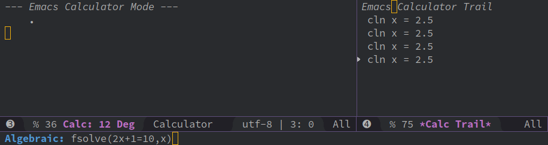
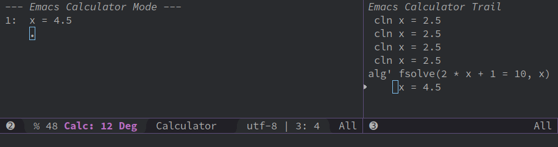
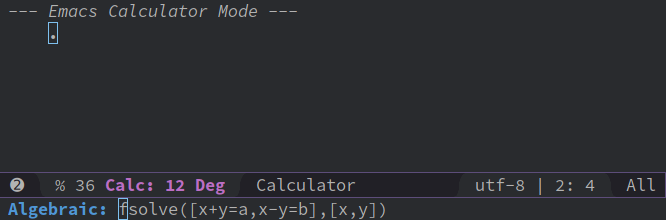
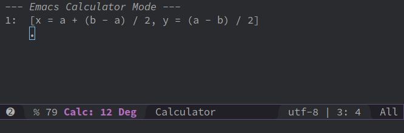

使用Calc求解代数方程式
今天发现calc的fsolve函数可以用来求解代数方程式:
比如，我下Calc(用M-x calc打开)下输入 'fsolve(2x+1=5,x) (其中最前面的 ' 表示使用Calc的代数模式,这样比较直观)

就会得到结果 x=4.5:

而且fsolve支持多元方程组，甚至是符号运算，比如输入 'fsolve([2x+y=a,3y+x=b],[x,y])

得到运算结果为 [x = a + (b - a) / 2, y = (a - b) / 2]

更爽的是，org-babel是支持calc的(当然前提是 org-babel-load-languages 变量中设置了 (calc . t))，因此你可以在org中输入
#+begin_src calc fsolve([2x+y=a,3y+x=b],[x,y]) #+end_src
然后在代码块中按下 C-c C-c 就能得到结果为
fsolve([2x+y=a,3y+x=b],[x,y])
[x = (a + (a / 2 - b) / 2.5) / 2, y = (b - a / 2) / 2.5]